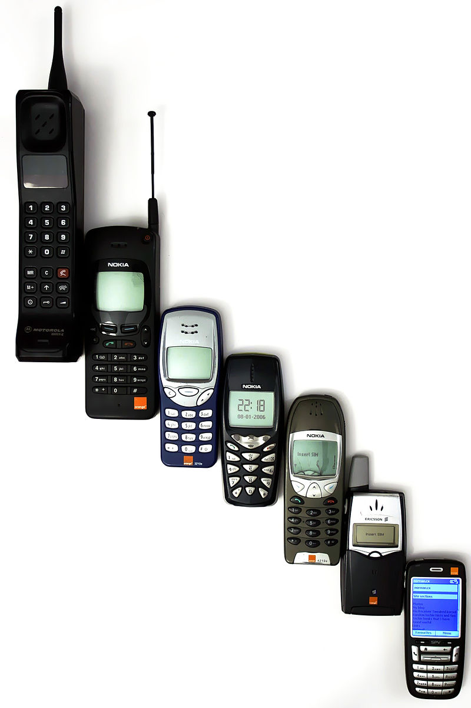

So when we talk about game changing technology, people think the computer, or the airplane.These inventions have change the way people live their live. But if we look deeper into our lives we will see an invention that effects our daily life. This invention is the cellphone and it has drastically changed the way humans live their everyday lives.
Now a days, phone are pocket size and have a wide array of uses. Use from playing games, watching videos, and then texting and communicating with friends. The last point is the most viable on to today’s society and has changed the way we live. Now we can contact our friends in the blink of an eye to arrange plans. People from across the world can communicate business ideas in a matter of hours. It is for the reasons listed above that I believe the cell phone to be one of the greatest inventions of modern day humans
Although cellphones can be very helpful in our daily life it can also have a negatitve effect on peoples lives. If it becomes an obssesion, it can consume a persons life and ruin it. Plus we have no evidence on the effects on prolonged exposure to their wifi output and other aspects to the phone itself.